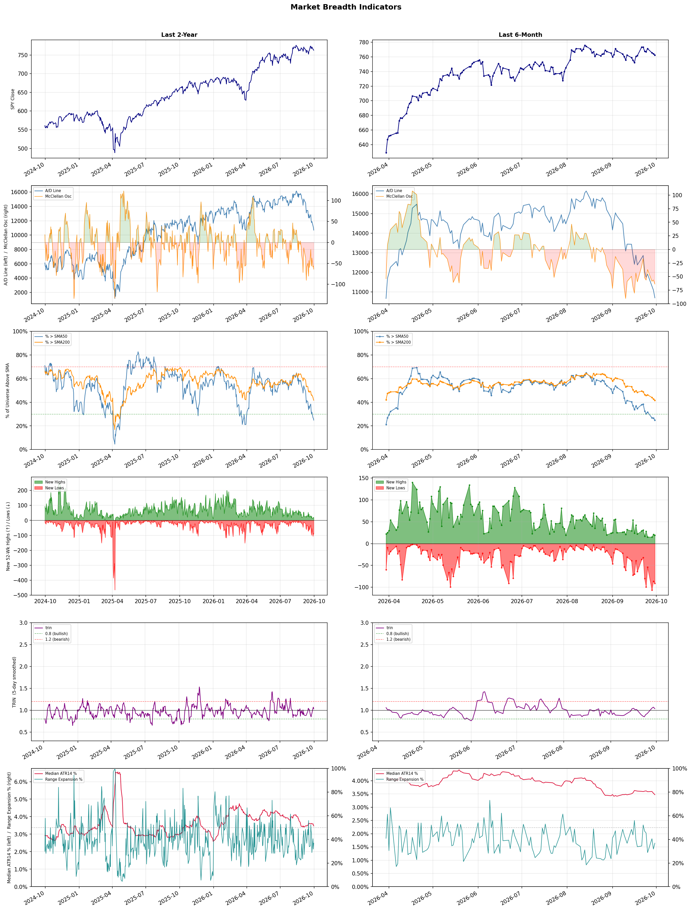

A daily market breadth and sector rotation report for active investors
| Item | Read |
|---|---|
| Regime | Defensive |
| Risk posture | Defensive |
| Universe | 1,319 stocks tracked · 19 new 52-week highs · 30 active swing setups |
| Breadth | only 24.9% of tracked stocks are above SMA50, new lows exceed new highs (91 vs 19), McClellan oscillator (breadth momentum) is negative at -63.9 |
| Leadership | Oil & Gas Refining & Marketing, Diagnostics & Research, and Computer Hardware |
| Weakest groups | Gambling, Resorts & Casinos, and REIT - Mortgage |
Use this report to prioritize research and chart review; validate entries, stops, liquidity, earnings, and risk before acting.
| Item | Read |
|---|---|
| Primary read | Defensive regime with Defensive risk posture. |
| Research queue | PBF, MPC, VLO, DINO, UGP |
| Leadership focus | Oil & Gas Refining & Marketing, Diagnostics & Research, and Computer Hardware |
| Caution list | Gambling, Resorts & Casinos, and REIT - Mortgage |
| Review prompt | Check extension risk, chart location, fundamentals, valuation, and earnings before using any research row. |
| Item | Read |
|---|---|
| Primary read | 4 active risk warnings; use screen output as watchlist input only. |
| Bullish screens | RVTY, TWST, P, SDGR, TXG |
| Bearish screens | TLRY, CWH, TRU, CNX, CRK |
| Alerts / levels | Automated trigger, stop, ATR, liquidity, reward/risk, and event-risk levels are pending future enrichment. |
| Review prompt | Open the linked chart, define trigger and invalidation, then check liquidity and event risk independently. |
Risk Posture: Defensive — screen backdrop favors caution; require independent risk review before new exposure
Metric context: McClellan below -50 = elevated selling pressure; below -100 = washout territory. Range Expansion = share of stocks with daily range above their 20-day average. Signal Density = share of tracked names appearing in signal screens.
| Breadth Date | % > SMA50 | % > SMA200 | New Highs | New Lows | McClellan | Median Range | Avg Range | Median ATR14 | Range Expansion | Signal Density |
|---|---|---|---|---|---|---|---|---|---|---|
| 2026-09-30 | 24.9% | 41.6% | 19 | 91 | -63.9 | 2.7% | 3.4% | 3.5% | 36.8% | 14.7% |

Prior comparison date: September 29, 2026
| Metric | Prior | Current | Change |
|---|---|---|---|
| Regime | Defensive | Defensive | unchanged |
| Risk Posture | Defensive | Defensive | unchanged |
| % > SMA50 | 26.6% | 24.9% | -1.7 pts |
| % > SMA200 | 42.7% | 41.6% | -1.0 pts |
| New Highs | 21 | 19 | -2 |
| New Lows | 86 | 91 | -5 |
Top-10 industries entering: Software - Infrastructure. Top-10 industries leaving: Apparel Retail. New multi-signal long setups: CRWD, LRCX, MRVI. New multi-signal short setups: APP, CRK, EQT, FER, KTOS, LBTYA, LBTYK.
| Status | Tickers | Read |
|---|---|---|
| Added | APP, CRK, CRWD, EQT, FER, KTOS, LBTYA, LBTYK | New technical screen matches vs prior report. |
| Removed | ABCL, ALKT, AMTM, BCE, BIDU, CHTR, CPRT, CXM | No longer present in today's technical screen matches. |
| Still Active | CNX, CWH, FIS, FMC, GT, HAYW, KRMN, MIR | Appeared in both current and prior reports. |
| Promoted | none | Model Screen Score improved by at least 15 points. |
| Downgraded | none | Model Screen Score declined by at least 15 points. |
| Direction | Industry | ETF | Prior Rank | Current Rank | Days | Rank Change |
|---|---|---|---|---|---|---|
| Rose | Semiconductor Equipment & Materials | SOXX | 83 | 5 | 14 | +78 |
| Rose | Semiconductors | SOXX | 80 | 6 | 42 | +74 |
| Rose | Electronic Components | XLK | 76 | 8 | 28 | +68 |
| Rose | Scientific & Technical Instruments | N/A | 72 | 15 | 42 | +57 |
| Rose | Specialty Retail | XRT | 72 | 18 | 35 | +54 |
Bull: The Semiconductor Equipment & Materials sector is experiencing rising relative strength primarily due to robust demand for semiconductor manufacturing, driven by advancements in AI and data center technologies, as highlighted by the strong performance of companies like AMD and Micron. The positive earnings reports and order increases from key players, such as Hewlett Packard Enterprise's significant AMD order and the bullish sentiment around Lam Research and Applied Materials, indicate a sector-wide rally fueled by increased investment in chip production and innovation, positioning this industry favorably amidst broader market fluctuations.
Bear: While the semiconductor sector may currently exhibit rising relative strength, this could be misleading given the cyclical nature of the industry and potential overvaluation concerns. The recent earnings reports, including Micron's, may not sustain momentum if inflationary pressures and supply chain disruptions continue to impact margins, leading to a slowdown in capital expenditures from key customers. Additionally, the excitement surrounding AI and data centers may be overhyped, with the risk of a market correction if growth expectations fail to materialize or if competition intensifies, particularly from emerging players.
Verdict: The semiconductor equipment and materials sector is experiencing rising strength due to heightened demand driven by advancements in AI and data center technologies, as evidenced by strong earnings and order increases from major players like AMD and Micron. However, investors should remain cautious of potential overvaluation and cyclical downturns, particularly if inflationary pressures and supply chain disruptions lead to reduced capital expenditures from key customers, which could dampen growth expectations.
Sources: Yahoo Finance, Google News
Bull: The semiconductor sector is experiencing a rise in relative strength primarily due to increasing demand driven by advancements in AI and data processing technologies, as highlighted by the bullish sentiment around companies like AMD and NVIDIA. Additionally, positive earnings reports, such as Micron's, are crucial for the sector's momentum, while the recent rebound in chip stocks, as noted in the Investor's Business Daily, suggests a recovery from previous sell-offs, further bolstered by strategic investment recommendations from firms like BofA. This combination of strong fundamentals and macroeconomic factors, including a focus on AI applications, positions the semiconductor industry favorably in the current market.
Bear: While the semiconductor sector may currently exhibit rising relative strength, this momentum is precarious and could be undermined by broader economic concerns, such as inflation and potential interest rate hikes, which are reflected in the recent decline of equity futures. Furthermore, reliance on a few key players like AMD and NVIDIA for growth in AI applications poses a risk; if these companies face operational challenges or if demand for AI slows, the entire sector could suffer. Additionally, the mixed performance of other semiconductor stocks, such as AMD's slip and the tepid response from Dell and Super Micro, suggests that the recovery may not be as broad-based or sustainable as bullish analysts claim.
Verdict: The semiconductor industry is experiencing a rise in demand primarily driven by advancements in AI and data processing technologies, as evidenced by strong performances from key players like AMD and NVIDIA. However, a significant risk remains from potential economic headwinds such as inflation and interest rate hikes, which could dampen growth and create volatility, particularly if reliance on a few dominant companies leads to sector-wide vulnerability. Investors should monitor macroeconomic indicators closely and consider diversifying their holdings to mitigate risks associated with overdependence on a limited number of firms.
Sources: Yahoo Finance, Google News
Bull: The rising relative strength of the Electronic Components sector can be attributed to the ongoing demand for technology and AI-related products, as highlighted by the interest in ETF strategies focused on AI trades. Additionally, positive earnings reports, such as Amphenol's strong performance, signal robust fundamentals within the sector, contrasting with mixed results from major tech players like Apple and Alphabet. This combination of strong earnings and the sector's alignment with growth trends in technology positions Electronic Components favorably amidst broader market volatility.
Bear: While the rising relative strength of the Electronic Components sector may appear promising, it is crucial to consider the broader economic context, particularly the recent inflation data that could lead to tighter monetary policy and reduced consumer spending. Additionally, the mixed performance of major tech players like Apple and Alphabet suggests that not all companies in the sector are benefiting equally, raising concerns about the sustainability of growth driven by AI-related products amidst potential regulatory headwinds and shifting market dynamics.
Verdict: The Electronic Components sector's rising strength is fundamentally driven by robust demand for technology and AI-related products, as evidenced by strong earnings from companies like Amphenol, which outpace mixed results from major tech firms. However, investors should remain cautious of potential risks, including tightening monetary policy due to inflationary pressures, which could dampen consumer spending and challenge the sustainability of growth in this sector.
Sources: Yahoo Finance, Google News
Bull: The Scientific & Technical Instruments sector is experiencing rising relative strength due to increased demand for precision measurement and monitoring technologies, as evidenced by the positive momentum of companies like Teledyne Technologies and Badger Meter. The headlines suggest a growing focus on innovation and efficiency in industries reliant on these instruments, which is likely driving investment and interest in the sector, despite some companies like Trimble and Garmin facing challenges relative to the broader technology sector. This trend indicates a robust market environment for scientific and technical instruments, positioning the sector favorably for future growth.
Bear: While the relative strength of the Scientific & Technical Instruments sector may appear promising, it is essential to recognize that this growth is not uniform across all companies, as evidenced by the underperformance of Trimble and Garmin relative to the broader technology sector. Additionally, the increasing demand for precision measurement and monitoring technologies could be a temporary reaction to current market conditions, and potential headwinds such as rising raw material costs, supply chain disruptions, and economic uncertainty may dampen future growth prospects. This suggests that the sector's apparent momentum could be misleading, masking underlying vulnerabilities that could impact long-term performance.
Verdict: The Scientific & Technical Instruments sector is likely experiencing rising demand due to heightened emphasis on precision measurement and monitoring technologies across various industries, driven by innovation and efficiency needs. However, investors should remain cautious of potential risks, including rising raw material costs and supply chain disruptions, which could undermine the sector's growth and reveal vulnerabilities in companies that are not performing as well as their peers. It is advisable to focus on well-performing companies like Teledyne Technologies and Badger Meter while monitoring the broader economic landscape for potential headwinds.
Sources: Google News
Bull: The rising relative strength of Specialty Retail can be attributed to a favorable consumer sentiment as evidenced by the positive trends in fall fashion, which suggests increased discretionary spending on apparel and home goods. Additionally, strong earnings reports from companies like CarMax indicate robust consumer demand and financial health within the sector, further bolstering investor confidence in specialty retailers amidst broader market fluctuations. This combination of positive earnings momentum and consumer trends positions specialty retail stocks favorably in the current economic landscape.
Bear: While the rising relative strength of specialty retail may seem promising, it is essential to consider the broader economic context, particularly the recent inflation data that could dampen consumer spending power. Additionally, the strong earnings from select companies like CarMax may not reflect the overall health of the sector, as these results could be driven by specific circumstances rather than a sustainable trend. As inflation persists and consumer sentiment shifts, discretionary spending may decline, posing significant risks to specialty retail stocks.
Verdict: The specialty retail industry's rising strength is primarily driven by favorable consumer sentiment and robust earnings from key players, indicating increased discretionary spending on apparel and home goods. However, a key risk lies in persistent inflation, which could erode consumer purchasing power and dampen spending, potentially undermining the positive momentum in the sector. Investors should closely monitor inflation trends and consumer sentiment shifts to make informed decisions regarding specialty retail stocks.
Sources: Yahoo Finance, Google News
| Direction | Industry | ETF | Prior Rank | Current Rank | Days | Rank Change |
|---|---|---|---|---|---|---|
| Fell | Real Estate Services | N/A | 23 | 83 | 42 | -60 |
| Fell | Uranium | URA | 23 | 78 | 35 | -55 |
| Fell | Gambling | N/A | 33 | 87 | 14 | -54 |
| Fell | Packaging & Containers | N/A | 29 | 82 | 42 | -53 |
| Fell | Agricultural Inputs | N/A | 7 | 60 | 28 | -53 |
Bear: While the bull analyst attributes the decline in the Real Estate Services sector to AI disruption and the underperformance of specific companies, this perspective overlooks the broader economic context, including rising interest rates and inflationary pressures that are fundamentally undermining real estate valuations. Additionally, the shift towards remote work and changing consumer preferences are likely to create long-term structural challenges for the office real estate market, suggesting that the current weakness may not be merely a temporary reaction to AI fears but rather indicative of a deeper, more persistent downturn in the sector.
Bull: The Real Estate Services sector is likely experiencing a decline in relative strength due to heightened investor concerns over the impact of AI disruption, particularly in office real estate, as highlighted by recent headlines discussing the stock market's reaction to these fears. Additionally, the underperformance of key players like CBRE Group and Cushman & Wakefield, as noted in earnings reports, suggests broader challenges within the sector that are contributing to its relative weakness compared to other industries. This combination of macroeconomic shifts and sector-specific challenges is driving a cautious sentiment among investors.
Verdict: The Real Estate Services sector is experiencing a decline primarily due to rising interest rates and inflation, which are exerting downward pressure on real estate valuations, compounded by structural challenges from the shift towards remote work and changing consumer preferences. While concerns over AI disruption are valid, the bear case highlights a more profound and persistent downturn driven by macroeconomic factors, necessitating a cautious approach for investors and a reevaluation of investment strategies in this sector.
Sources: Google News
Bear: While the bull analyst points to profit-taking and selective investment as temporary factors, the persistent decline in the uranium sector's relative strength suggests deeper, systemic issues that could undermine any potential recovery. The volatility in stocks like NuScale Power and Oklo, alongside the correction revealing a stark divide between profitable producers and loss-making developers, indicates that investor confidence is waning, and concerns about dilution and profitability may signal a more cautious outlook for the entire sector. Furthermore, the recent price surges may be short-lived, as they do not address the fundamental challenges of high operational costs, regulatory hurdles, and competition from alternative energy sources that could continue to plague uranium investments.
Bull: The recent decline in the relative strength of the uranium sector can be attributed to a mix of profit-taking and concerns about dilution among investors, as highlighted by the volatility in stocks like NuScale Power and Oklo. Additionally, the headlines indicate a sector correction that has exposed a divide between profitable producers and loss-making developers, suggesting that investors are becoming more selective, which may be contributing to the overall weakness in the uranium industry's performance relative to other sectors. However, the recent price surges for companies like Uranium Energy, driven by strong realized uranium prices, indicate underlying bullish fundamentals that could support a rebound.
Verdict: The uranium industry's recent decline appears driven by profit-taking and heightened investor selectivity, revealing a split between successful producers and struggling developers, which may signal caution among investors. However, the key risk from the bear case lies in the persistent systemic challenges, such as high operational costs and regulatory hurdles, which could hinder a sustainable recovery despite short-term price surges. Investors should closely monitor these fundamental issues while considering opportunities in profitable uranium producers that demonstrate resilience.
Sources: Yahoo Finance, Google News
Bear: While the bull analyst highlights optimism around specific companies, the broader gambling industry is facing significant headwinds that could undermine any short-term gains. Persistent macroeconomic pressures, including rising inflation and interest rates, are likely to squeeze consumer discretionary spending, which is critical for gambling revenues. Furthermore, the regulatory landscape is becoming increasingly complex, with potential restrictions on sports betting and online gambling in various jurisdictions that could stifle growth and deter investment in the sector as a whole.
Bull: The gambling industry is experiencing a decline in relative strength primarily due to macroeconomic pressures and shifting consumer behaviors, as indicated by the recent headlines. While there is optimism about a resurgence in regional gaming, as noted by Goldman Sachs' "Buy" rating on PENN, broader concerns such as inflation, changing regulations, and competition from emerging markets like India may be dampening investor sentiment. Additionally, the focus on specific stocks like DraftKings and Penn Entertainment suggests that while some companies show promise, the overall sector may be struggling to maintain momentum against other industries.
Verdict: The gambling industry's decline is primarily driven by macroeconomic pressures, such as rising inflation and interest rates, which are constraining consumer discretionary spending and impacting revenues. Additionally, the evolving regulatory landscape poses a significant risk, as potential restrictions on sports betting and online gambling could further stifle growth and deter investment. Investors should remain cautious and closely monitor both consumer behavior and regulatory developments when considering positions in this sector.
Sources: Google News
Bear: While some analysts may highlight a few stocks as resilient, the broader Packaging & Containers industry is grappling with significant structural challenges that cannot be overlooked. The ongoing geopolitical tensions, particularly the Iran war, have not only disrupted supply chains but have also led to heightened volatility in raw material prices, which could erode margins for even the most well-positioned companies. Furthermore, the persistent labor shortages and inflationary pressures are likely to constrain profitability across the sector, making it difficult for any stock to truly thrive in this environment.
Bull: The Packaging & Containers industry is experiencing a decline in relative strength primarily due to macroeconomic pressures and geopolitical tensions, as highlighted by the Morningstar report on the impact of the Iran war, which has disrupted supply chains and increased costs. Additionally, the industry faces challenges such as rising raw material prices and labor shortages, prompting analysts to note that only a few stocks, like those mentioned in Zacks and The Globe and Mail, are well-positioned to navigate these headwinds effectively.
Verdict: The Packaging & Containers industry is declining due to macroeconomic pressures, including rising raw material costs and labor shortages exacerbated by geopolitical tensions, particularly the Iran war, which has disrupted supply chains. While a few stocks may be positioned to weather these challenges, the broader structural issues, including persistent inflation and volatility in raw material prices, pose significant risks to profitability across the sector. Investors should approach with caution, focusing on companies with strong operational efficiencies and diversified supply chains to mitigate these risks.
Sources: Google News
Bear: While the bull analyst attributes the decline in the Agricultural Inputs sector to broader market dynamics and a rotation towards economically sensitive materials, this perspective overlooks the fundamental challenges facing the agricultural sector, such as rising input costs, potential supply chain disruptions, and increasing regulatory pressures. Additionally, the recent price drops in key players like Intrepid Potash and Mosaic indicate not just a shift in investor sentiment, but also underlying concerns about profitability and demand in a potentially oversaturated market, which could signal a more prolonged downturn for agricultural inputs rather than a temporary decline.
Bull: The Agricultural Inputs sector is likely experiencing a decline in relative strength due to broader market dynamics, particularly as the economically sensitive materials sector shows signs of breaking out, indicating a rotation of investor interest away from agricultural stocks. Additionally, recent price declines in key players like Intrepid Potash and Mosaic, coupled with Morgan Stanley's cautious stance, suggest that investor sentiment may be shifting towards undervalued sectors, as highlighted by Morningstar's assessment of the basic materials sector, further contributing to the relative weakness in Agricultural Inputs.
Verdict: The Agricultural Inputs sector is likely declining due to a combination of rising input costs, supply chain disruptions, and increased regulatory pressures, which are straining profitability and demand amid a potentially oversaturated market. This fundamental weakness, coupled with broader market dynamics favoring economically sensitive materials, suggests that investors may be reallocating their capital away from agricultural stocks. The key risk lies in the possibility of a prolonged downturn if these fundamental challenges persist, making it crucial for investors to closely monitor market conditions and company performance in this sector.
Sources: Google News
| Industry | Rank | ETF | 7d | 14d | 28d | 42d | Chg 42d | Size | 20D | 60D | Composite | Active Setups |
|---|---|---|---|---|---|---|---|---|---|---|---|---|
| Oil & Gas Refining & Marketing | 1 | CRAK | 1 | 2 | 2 | 5 | +4 | 6 | 4.0% | 47.0% | 0.975 | 0 |
| Diagnostics & Research | 2 | N/A | 2 | 1 | 1 | 1 | -1 | 16 | 11.6% | 29.3% | 0.949 | 0 |
| Computer Hardware | 3 | XLK | 5 | 40 | 40 | 24 | +21 | 15 | 10.9% | 15.9% | 0.906 | 1 |
| Health Information Services | 4 | N/A | 3 | 3 | 3 | 2 | -2 | 12 | 11.9% | 34.4% | 0.894 | 0 |
| Semiconductor Equipment & Materials | 5 | SOXX | 13 | 83 | 77 | 57 | +52 | 17 | 21.6% | 8.6% | 0.891 | 1 |
| Semiconductors | 6 | SOXX | 10 | 55 | 72 | 80 | +74 | 38 | 13.1% | -1.8% | 0.843 | 1 |
| Copper | 7 | COPX | 24 | 22 | 10 | 11 | +4 | 6 | 1.0% | 26.0% | 0.823 | 0 |
| Electronic Components | 8 | XLK | 9 | 70 | 76 | 70 | +62 | 10 | 9.6% | -3.3% | 0.797 | 0 |
| Software - Infrastructure | 9 | IGV | 7 | 9 | 23 | 13 | +4 | 62 | 1.2% | 5.5% | 0.760 | 1 |
| Oil & Gas Integrated | 10 | XLE | 4 | 5 | 4 | 15 | +5 | 10 | -2.4% | 18.2% | 0.747 | 0 |
Rank columns (7d–42d) show the industry's rank that many trading days ago — lower is stronger. Chg 42d = rank change vs 42 trading days ago — positive means the industry moved up. 20D and 60D are the mean stock return within the industry over that period. Active Setups: count of today's swing-trade candidates from this industry appearing across all signal screens.
| Industry | Rank | ETF | 7d | 14d | 28d | 42d | Chg 42d | Size | 20D | 60D | Composite | Active Setups |
|---|---|---|---|---|---|---|---|---|---|---|---|---|
| Gambling | 87 | N/A | 87 | 33 | 48 | 65 | -22 | 5 | -17.8% | -26.0% | 0.039 | 0 |
| Resorts & Casinos | 86 | N/A | 86 | 78 | 80 | 53 | -33 | 6 | -12.0% | -19.1% | 0.056 | 0 |
| REIT - Mortgage | 85 | N/A | 69 | 63 | 45 | 49 | -36 | 11 | -14.3% | -17.0% | 0.066 | 0 |
| Chemicals | 84 | N/A | 70 | 85 | 81 | 85 | +1 | 8 | -11.2% | -23.2% | 0.100 | 0 |
| Real Estate Services | 83 | N/A | 81 | 61 | 59 | 23 | -60 | 9 | -11.5% | -15.5% | 0.109 | 0 |
| Packaging & Containers | 82 | N/A | 77 | 56 | 44 | 29 | -53 | 7 | -11.1% | -12.8% | 0.133 | 0 |
| REIT - Specialty | 81 | XLRE | 74 | 58 | 78 | 78 | -3 | 11 | -9.3% | -14.3% | 0.136 | 0 |
| Auto Manufacturers | 80 | N/A | 67 | 59 | 67 | 75 | -5 | 10 | -9.2% | -13.7% | 0.137 | 0 |
| Leisure | 79 | N/A | 85 | 82 | 66 | 62 | -17 | 9 | -9.0% | -14.6% | 0.145 | 0 |
| Uranium | 78 | URA | 76 | 76 | 31 | 47 | -31 | 6 | -16.1% | -10.0% | 0.151 | 0 |
Rank columns (7d–42d) show the industry's rank that many trading days ago — lower is stronger. Chg 42d = rank change vs 42 trading days ago — positive means the industry moved up. 20D and 60D are the mean stock return within the industry over that period. Active Setups: count of today's swing-trade candidates from this industry appearing across all signal screens.
These are research candidates from top-ranked stocks, capped at five names per industry to avoid over-concentration. Returns shown (60D, 120D, 250D) are historical — they reflect where prices have already moved, not forward expectations. Extension Risk flags names that may require extra patience or a better entry point. They are not buy signals.
Chart: TV = TradingView chart (opens in browser); PDF = local chart file (if downloaded).
| Ticker | Name | Industry | Industry Rank | Market Cap | 60D Hist | 120D Hist | 250D Hist | Extension Risk | Research Reason | Chart |
|---|---|---|---|---|---|---|---|---|---|---|
| PBF | PBF Energy | Oil & Gas Refining & Marketing | 1 | N/A | 59.4% | 91.8% | 163.6% | Extended | Top-ranked in industry; extended | TV |
| MPC | Marathon Petroleum | Oil & Gas Refining & Marketing | 1 | N/A | 48.9% | 78.1% | 109.1% | Constructive | Top-ranked in industry | TV |
| VLO | Valero Energy | Oil & Gas Refining & Marketing | 1 | N/A | 46.2% | 66.3% | 136.1% | Constructive | Top-ranked in industry | TV |
| DINO | HF Sinclair | Oil & Gas Refining & Marketing | 1 | N/A | 46.0% | 92.7% | 113.2% | Constructive | Top-ranked in industry | TV |
| UGP | Ultrapar Participacoes | Oil & Gas Refining & Marketing | 1 | N/A | 38.3% | 30.0% | 90.3% | Constructive | Top-ranked in industry | TV |
| TWST | Twist Bioscience | Diagnostics & Research | 2 | N/A | 112.3% | 295.7% | 560.4% | Very extended | Top-ranked in industry; very extended | TV |
| NTRA | Natera | Diagnostics & Research | 2 | N/A | 46.9% | 103.6% | 155.7% | Extended | Top-ranked in industry; extended | TV |
| ILMN | Illumina | Diagnostics & Research | 2 | N/A | 42.7% | 121.3% | 167.6% | Extended | Top-ranked in industry; extended | TV |
| ADPT | Adaptive Biotechnologies | Diagnostics & Research | 2 | N/A | 38.8% | 115.7% | 98.5% | Extended | Top-ranked in industry; extended | TV |
| RVTY | Revvity | Diagnostics & Research | 2 | N/A | 36.5% | 69.3% | 67.1% | Constructive | Top-ranked in industry | TV |
| P | Everpure | Computer Hardware | 3 | N/A | 67.1% | 117.3% | 52.6% | Extended | Top-ranked in industry; extended | TV |
| CRSR | Corsair Gaming | Computer Hardware | 3 | N/A | 51.9% | 141.5% | 56.1% | Extended | Top-ranked in industry; extended | TV |
| DELL | Dell Technologies | Computer Hardware | 3 | N/A | 29.1% | 197.9% | 264.0% | Extended | Top-ranked in industry; extended | TV |
| SNDK | SanDisk | Computer Hardware | 3 | N/A | 7.6% | 104.3% | 1336.5% | Extended | Top-ranked in industry; extended | TV |
| IONQ | IonQ Inc | Computer Hardware | 3 | N/A | -3.3% | 56.2% | -30.5% | Lagging | Top-ranked in industry; lagging | TV |
| TXG | 10x Genomics | Health Information Services | 4 | N/A | 138.9% | 292.9% | 629.3% | Very extended | Top-ranked in industry; very extended | TV |
| SDGR | Schrodinger | Health Information Services | 4 | N/A | 88.3% | 170.7% | 46.4% | Extended | Top-ranked in industry; extended | TV |
| TEM | Tempus AI | Health Information Services | 4 | N/A | 36.3% | 85.5% | -6.9% | Constructive | Top-ranked in industry | TV |
| CERT | Certara | Health Information Services | 4 | N/A | 28.3% | 70.1% | -31.2% | Constructive | Top-ranked in industry | TV |
| HNGE | Hinge Health | Health Information Services | 4 | N/A | 8.9% | 170.3% | 99.5% | Extended | Top-ranked in industry; extended | TV |
These are technical screen matches from existing signal files. They are not trade recommendations. Trigger, stop, ATR, liquidity, reward/risk, and event risk still require separate validation until those inputs are available.
Model Screen Score is weighted by signal count, industry rank, freshness, and setup type. It is not a probability of profit, expected return, or suitability rating. Industry cap: max 3 candidates per industry.
Signal glossary: Momentum Pullback = stock in an uptrend that has pulled back 10–30% and shows re-entry conditions. MA Compression = short- and long-term moving averages converging, often preceding a directional move. Three-Day Up/Down = three consecutive closes in the same direction. New 52Wk High/Low = price reached a new annual extreme.
Chart: TV = TradingView chart (opens in browser); PDF = local chart file (if downloaded).
| Ticker | Industry | Setups | Close | Industry Rank | Signal Count | Model Screen Score | Reason | Chart |
|---|---|---|---|---|---|---|---|---|
| RVTY | Diagnostics & Research | New 52Wk High; Three-Day Up | 152.89 | 2 | 2 | 100 | Multi-signal; top industry breakout | TV |
| TWST | Diagnostics & Research | New 52Wk High; Three-Day Up | 193.24 | 2 | 2 | 100 | Multi-signal; top industry breakout | TV |
| P | Computer Hardware | New 52Wk High; Three-Day Up | 130.78 | 3 | 2 | 100 | Multi-signal; top industry breakout | TV |
| SDGR | Health Information Services | New 52Wk High; Three-Day Up | 31.05 | 4 | 2 | 93 | Multi-signal; top industry breakout | TV |
| TXG | Health Information Services | New 52Wk High; Three-Day Up | 90.36 | 4 | 2 | 93 | Multi-signal; top industry breakout | TV |
| LRCX | Semiconductor Equipment & Materials | Momentum Pullback; Three-Day Up | 328.51 | 5 | 2 | 93 | Multi-signal; top industry pullback | TV |
| CRWD | Software - Infrastructure | New 52Wk High; Three-Day Up | 264.75 | 9 | 2 | 85 | Multi-signal; top industry breakout | TV |
| NTAP | Software - Infrastructure | New 52Wk High; Three-Day Up | 210.08 | 9 | 2 | 85 | Multi-signal; top industry breakout | TV |
| OKTA | Software - Infrastructure | New 52Wk High; Three-Day Up | 209.11 | 9 | 2 | 85 | Multi-signal; top industry breakout | TV |
| MRVI | Biotechnology | Momentum Pullback; Three-Day Up | 7.66 | 27 | 2 | 70 | Multi-signal; pullback setup | TV |
| PGEN | Biotechnology | New 52Wk High; Three-Day Up | 8.56 | 27 | 2 | 70 | Multi-signal; new-high strength | TV |
Bearish setups — stocks making new lows or showing persistent downside patterns. Validate carefully before acting.
| Ticker | Industry | Setups | Close | Industry Rank | Signal Count | Model Screen Score | Reason | Chart |
|---|---|---|---|---|---|---|---|---|
| TLRY | Drug Manufacturers - Specialty & Generic | New 52Wk Low; Three-Day Down | 3.75 | 31 | 2 | 40 | Multi-signal; new-low weakness | TV |
| CWH | Auto & Truck Dealerships | New 52Wk Low; Three-Day Down | 5.02 | 35 | 2 | 40 | Multi-signal; new-low weakness | TV |
| TRU | Financial Data & Stock Exchanges | New 52Wk Low; Three-Day Down | 61.12 | 39 | 2 | 40 | Multi-signal; new-low weakness | TV |
| CNX | Oil & Gas E&P | New 52Wk Low; Three-Day Down | 31.17 | 40 | 2 | 40 | Multi-signal; new-low weakness | TV |
| CRK | Oil & Gas E&P | New 52Wk Low; Three-Day Down | 12.32 | 40 | 2 | 40 | Multi-signal; new-low weakness | TV |
| EQT | Oil & Gas E&P | New 52Wk Low; Three-Day Down | 48.56 | 40 | 2 | 40 | Multi-signal; new-low weakness | TV |
| APP | Advertising Agencies | New 52Wk Low; Three-Day Down | 290.43 | 41 | 2 | 35 | Multi-signal; new-low weakness | TV |
| Z | Internet Content & Information | New 52Wk Low; Three-Day Down | 27.13 | 42 | 2 | 35 | Multi-signal; new-low weakness | TV |
| ZG | Internet Content & Information | New 52Wk Low; Three-Day Down | 27.70 | 42 | 2 | 35 | Multi-signal; new-low weakness | TV |
| HAYW | Electrical Equipment & Parts | New 52Wk Low; Three-Day Down | 12.24 | 46 | 2 | 35 | Multi-signal; new-low weakness | TV |
| GT | Auto Parts | New 52Wk Low; Three-Day Down | 4.97 | 47 | 2 | 35 | Multi-signal; new-low weakness | TV |
| MIR | Specialty Industrial Machinery | New 52Wk Low; Three-Day Down | 14.12 | 49 | 2 | 35 | Multi-signal; new-low weakness | TV |
| FIS | Information Technology Services | New 52Wk Low; Three-Day Down | 32.90 | 55 | 2 | 35 | Multi-signal; new-low weakness | TV |
| LBTYA | Telecom Services | New 52Wk Low; Three-Day Down | 9.13 | 56 | 2 | 35 | Multi-signal; new-low weakness | TV |
| LBTYK | Telecom Services | New 52Wk Low; Three-Day Down | 8.89 | 56 | 2 | 35 | Multi-signal; new-low weakness | TV |
| FMC | Agricultural Inputs | New 52Wk Low; Three-Day Down | 8.92 | 60 | 2 | 35 | Multi-signal; new-low weakness | TV |
| FER | Engineering & Construction | New 52Wk Low; Three-Day Down | 54.10 | 63 | 2 | 25 | Multi-signal; new-low weakness | TV |
| KRMN | Aerospace & Defense | New 52Wk Low; Three-Day Down | 32.42 | 64 | 2 | 25 | Multi-signal; new-low weakness | TV |
| KTOS | Aerospace & Defense | New 52Wk Low; Three-Day Down | 42.69 | 64 | 2 | 25 | Multi-signal; new-low weakness | TV |
How To Use This Report
| Use | Purpose |
|---|---|
| Market map | Start with breadth, regime, risk warnings, and what changed since the prior report. |
| Industry scan | Use leading, deteriorating, rising, and declining industries to focus research. |
| Research queue | Treat long-term candidates as names for deeper fundamental, valuation, and chart review. |
| Technical review | Treat bullish and bearish screen matches as watchlist inputs that require independent trigger, stop, liquidity, and event-risk checks. |
| Source follow-up | Use chart links and source files to verify raw inputs before relying on any row. |
What This Report Is Not
| Not | Meaning |
|---|---|
| Investment advice | The report does not evaluate personal objectives, risk tolerance, tax situation, account type, or suitability. |
| Buy/sell recommendation | Named tickers are research candidates or screen matches, not recommendations to transact. |
| Price target | The report does not provide fair value estimates, targets, or expected returns. |
| Trade plan | Trigger, stop, sizing, reward/risk, liquidity, and event-risk review remain separate user work. |
| Performance claim | Model Screen Score is not validated historical performance or a forecast of future results. |
| Item | Note |
|---|---|
| Version | Daily Report Methodology v1 |
| Model Screen Score | Screen-fit rank based on signal count, industry rank, freshness, and setup type. |
| Not predictive proof | The score is not expected return, probability of profit, historical validation, or suitability analysis. |
| Industry ranks | Composite industry ranks use existing daily ranking outputs and historical rank columns when available. |
| Research candidates | Long-term rows are research candidates from ranked stocks and leading industries, with historical returns labeled as historical only. |
| Technical matches | Bullish and bearish rows are screen matches requiring independent chart, trigger, stop, liquidity, and event-risk review. |
| Source | Status | Rows | Path |
|---|---|---|---|
| Market breadth | present | 1253 | breadth_20260930.csv |
| Industry composite rankings | present | 87 | all_industry_composite_20260930.csv |
| Top ranked stocks | present | 192 | top_ranked_composite_20260930.csv |
| All ranked stocks | present | 1319 | all_stocks_composite_sorted_20260930.csv |
| Top momentum pullbacks | present | 1472 | top_momentum_pullbacks_20260930.csv |
| MA compression | present | 1472 | ma_compression_stocks_20260930.csv |
| Three-day up/down | present | 217 | three_day_up_down_stocks_20260930.csv |
| New 52-week members | present | 110 | breadth_new_52wk_members_20260930.csv |
This report is generated from automated technical screens and is for informational and research purposes only. It is not investment advice, a solicitation, or a recommendation to buy or sell any security. Past performance is not indicative of future results. You are solely responsible for your own investment decisions. Consult a licensed financial advisor before acting on any information herein.